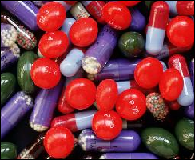

Pescription Pain Pills
for addict who do not want touse illegal method to get wasteds
this is the 'safe bet' of drug worldd ands best of all there are hunderd variety
of pill to choose from. all is required: capability to lie. normalaly doug beach
virtue say lie is badbut this is for greater good (a very old greek person with
name similiar to pluto agree with thuis concept and refer to it as noble lye).
now yu have green light to lie so how to do? exampleh:
you: my elbow tendon is giving me unfavorable sensations
doctor: alright here is 500 mg of percocet take 4 a day for
rest oif eternity and call me in morning

pills : the official candy of 21th century (tm)
in generals all pain pill are good regardles of drug in question! there is
reason they are call {PAIN PILL} it is becausre they cure all pains include
crushing emotonal pain of being fat you entire life and have no friend! i
cannot singer enough praise of pescription pill (even better if you canasdain
and get free drug) score = another notch for the good guys